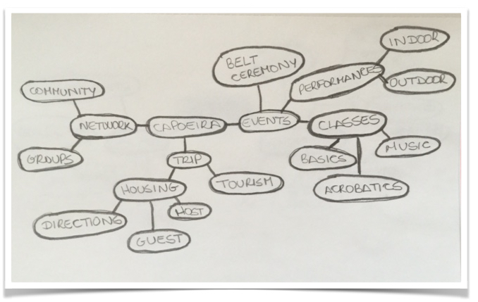
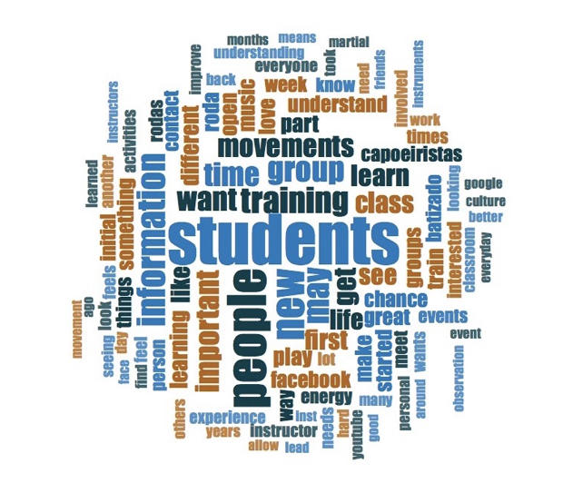
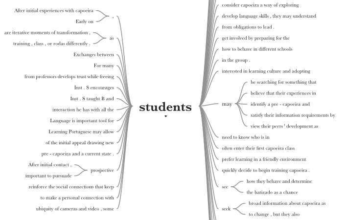
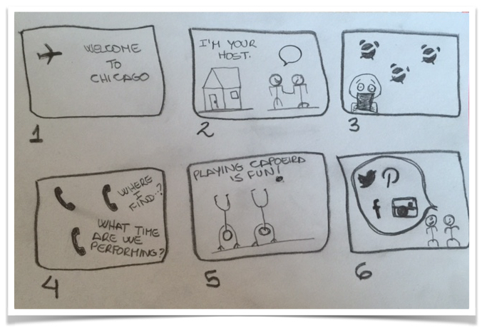
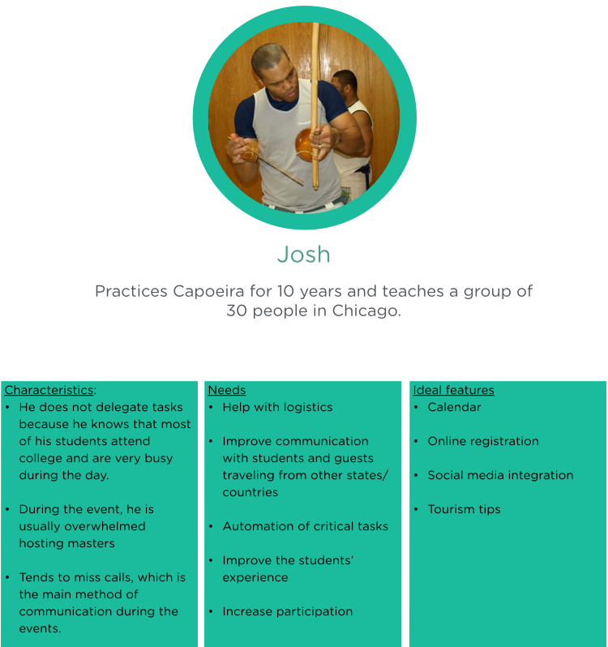

Process
Step #3: Identifying areas of interest
I began by exploring the identity of the new product idealized by the client. A concept map allowed me to understand how ideas and concepts were related, based on the information gathered in a stakeholder workshop. My next task was to define the scope of the project, key aims and deliverables.
Step #1: Interviewing users
Aiming to understand the goals and motivations of individuals who practice the martial art, I conducted five phone interviews. I asked pratictioners about their experience practicing Capoeira and their participation oin events. Next, I used NVivo to produce a word cloud as a tool for preliminary analysis of these interviews.
Step #2: Identifying user goals
Further analyzing the interview data, I generated a word tree with NVivo. The results indicated that the main goals of the subjects through their Capoeira journey were to learn a new language, meet people and network. We used this information as a basis for constructing three personas and the storyboard below.
Step #4: Storyboard
Sketches showing the chronological sequence of Ana's arrival in Chicago for a Capoeira event. This storyboard shows a user's thoughts and expectations during her trip.
- Ana flies from NYC to Chicago for a Capoeira event. She is very excited to spend a few vacation days practicing Capoeira. She is still a beginner in this martial art, but she has been in events like this before.
- Ana meets her host, Carlos. He is a Capoeirista in the area, and they have only talked on the phone before her trip.
- Carlos leaves early for work. Ana cannot find the information about a performance that is supposed to happen in the afternoon. She finds some notes on her phone but some of the information is missing.
- Ana tries to reach out to a couple of New Yorkers travelling for the event, but nobody picks up the phone. She wishes she had all the information about the event in one place. Ana finally contacts the instructor who is also the event organizer. Unfortunately the performance is over. The instructor apologizes for the communication issues and gives her the address to the academy for the first Capoeira workshop.
- Ana attends the first workshop and meets new people. She definitely has a good time after figuring out her housing situation, class and performance schedules.
- By the end of the event, Ana has been promoted to a new belt and has made new friends. She hopes to keep in contact with them and share pictures and videos from the workshops.
Step #5: Persona
I created two personas. One persona represented the event organizer, and the other represented students. Next, I began testing out the initial ideas and building simple paper prototypes.
Step #5: Mockup
I presented a complete research report and mocked up the design in Keynote, to facilitate visualization of the findings and recommendations.